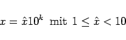
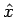
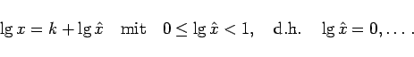
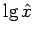
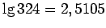

Inhalt Index DeskTop Bronstein

 Arithmetik Elementare Rechenregeln Potenzen, Wurzeln, Logarithmen Logarithmen
Arithmetik Elementare Rechenregeln Potenzen, Wurzeln, Logarithmen Logarithmen


Die dekadischen und die natürlichen Logarithmen stehen in Logarithmentafeln zur Verfügung. Sie wurden früher mit Vorteil bei der numerischen Bildung von Potenzen oder zur Vereinfachung numerischer Multiplikationen und Divisionen verwendet. Am häufigsten wurden die dekadischen Logarithmen dazu benutzt. Heute sind die Logarithmentafeln durch die Taschenrechner und Personalcomputer weitgehend aus der rechnerischen Praxis verdrängt.
Jede Dezimalzahl, also jede reelle Zahl, in diesem Zusammenhang auch Numerus genannt, kann durch Vorziehen einer Zehnerpotenz 10k mit ganzzahligem k in der Form
|  | (1.29a) |
halblogarithmisch dargestellt werden. Dabei ist  durch die Ziffernfolge von x bestimmt, während 10k die Größenordnung von x angibt. Somit wird
|  | (1.29b) |
Man nennt k die Kennzahl und die Ziffernfolge hinter dem Komma von  die Mantisse. Letztere wird der Logarithmentafel entnommen.
| Beispiel |
|
, also Kennzahl 2, Mantisse 5105. Für die durch Multiplikation oder Division mit 10n entstandenen Zahlen, z.B. 3240; 324000; 3,24; 0,0324, haben die Logarithmen die gleiche Mantisse, hier 5105, aber verschiedene Kennzahlen. Daher sind es die Mantissen, die in den Logarithmentafeln tabelliert sind. Beim Ablesen der Mantisse braucht weder auf die Stelle des Kommas noch auf die links oder rechts von der Zahl stehenden Nullen einschließlich der Null vor dem Komma geachtet zu werden. Diese gehen in die Bestimmung der Kennzahl k für einen bestimmten Numerus x ein. |